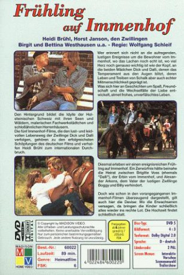

IMDB-Wertung: 4.4 / 10
IMDB-Wertung: 4.4 / 10  Metascore:
Metascore: 
 IMDB-Wertung: 4.4 / 10 Metascore:
Jahr: 1974
Dauer: 90 Minuten
FSK: 6
Land: West-Deutschland Studio: Constantin FilmTonspuren:
Untertitel:
Auflösung: 1080p (1440x1080) Größe: 5591 MB
Regisseur: Wolfgang Schleif
Drehbuch: Wolfgang Schleif
Soundtrack: Ernst Brandner
Darsteller:
Datei: X:\6-Hexalogie(A-Z)\Immenhof\Frühling auf Immenhof (1974, FSK6, 1440x1080).mkv seit 09.01.2018
Festplatte: HD Collection-3(N-Z)-6(A-Z)
 Es gibt insgesamt 9 Filme in der Gruppe '6-Hexalogie(A-Z)\Immenhof'
Es gibt insgesamt 9 Filme in der Gruppe '6-Hexalogie(A-Z)\Immenhof'